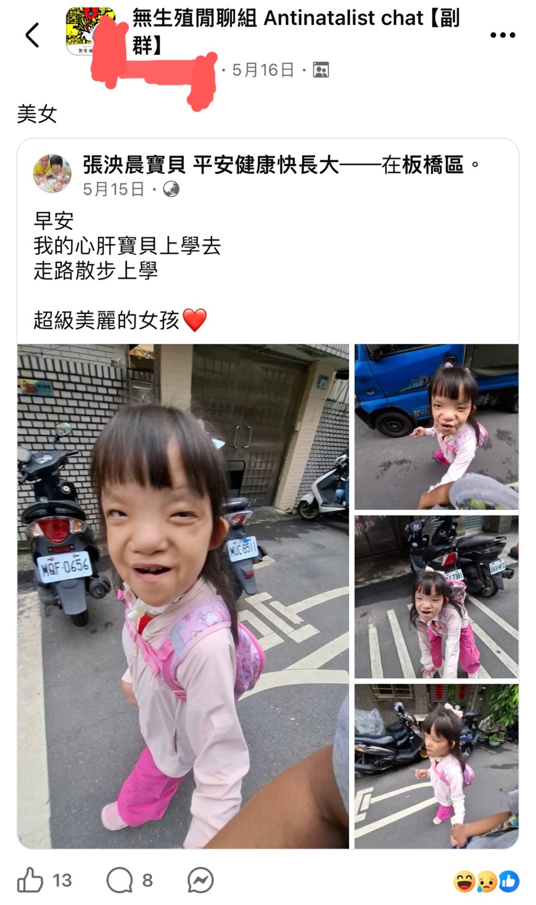
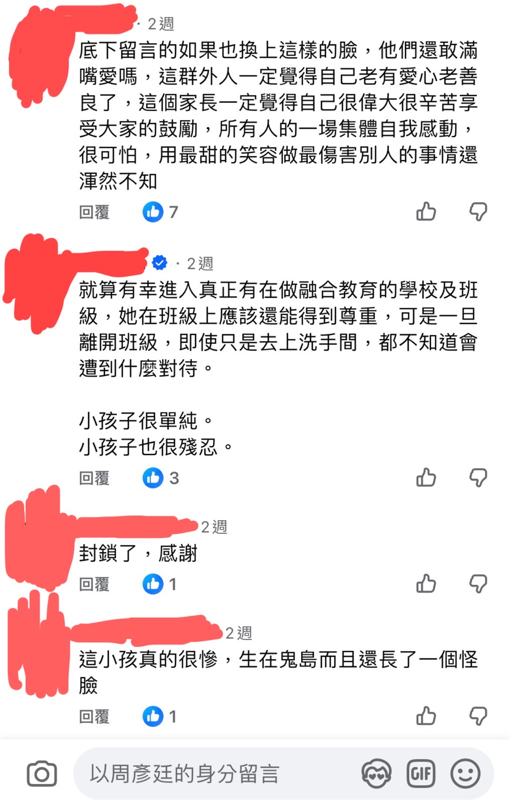
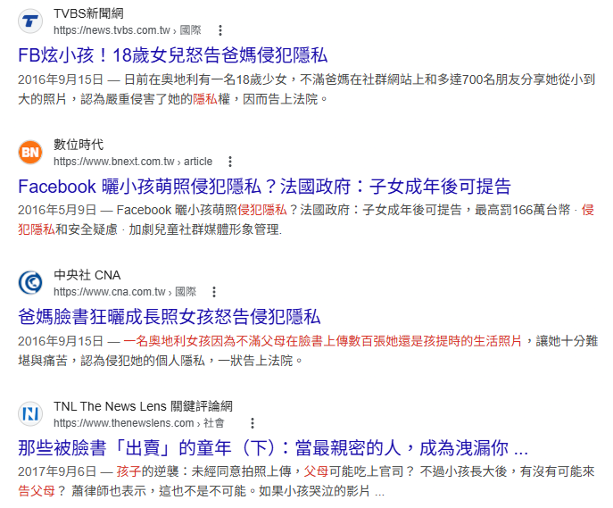
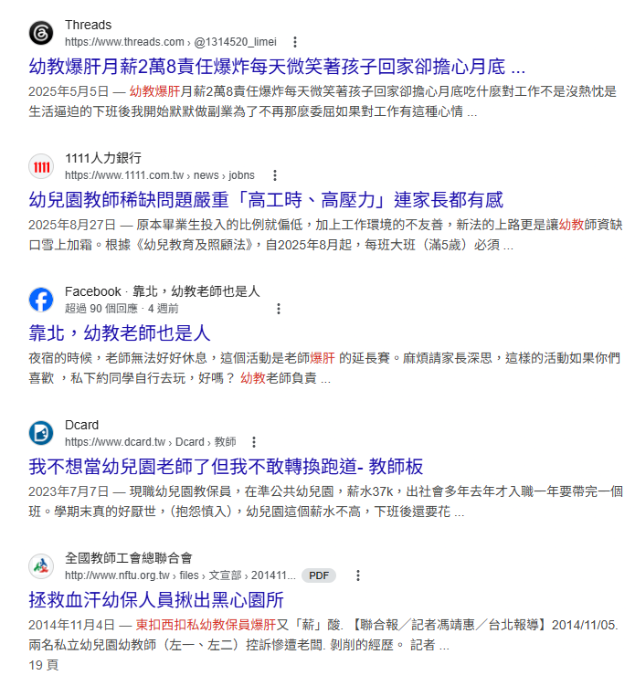

點擊上方的語言選單以切換語言
本專案並非針對任何特定的宗教或群體，而是針對所有「缺乏物理實相支撐」與「邏輯不通」的信仰系統進行解構。
身為開發者，我們深知一套系統若底層邏輯混亂，無論介面（儀式）多麼華麗，最終都將導致運行錯誤。本專案的宗旨如下：
「本專案不提供心靈寄託，只提供實相數據。請保持理性，拒絕被任何未經校驗的迷信系統所誤導。」
小時候，長輩總喜歡用一套粗暴的因果論來管教我們：「不可以說謊、不能欺負人、不要做不符合社會風氣的事，否則死後會下地獄受苦。」這種恐嚇式的道德綁架，幾乎成了每個人童年的集體陰影。然而，當我們長大並開始用理性和邏輯審視這個世界時，就會發現這套流傳千年的「死後審判機制」，在現實與邏輯上根本漏洞百出。
許多動漫和電影（如《與神同行》、《鬼灯的冷徹》）都熱衷於描繪死後世界如何井然有序地根據生前善惡進行審判。但如果這種機制存在於現實，邏輯立刻就會全面崩潰：
我們常談「做好事」與「做壞事」，但這兩者的界線從來都不是絕對的。在現實的生態與生物鏈中，多數時候**我們的利益與享受，恰恰是建立在其他生命的苦難之上**。
大廚煮出美食滿足饕客是善行，但為了提供食材，漁夫需要捕撈、畜牧業者必須宰殺。在《聖經》創世記中，上帝甚至明確表現出對亞伯牲畜祭品的喜愛，勝過該隱的農作物。這種骨牌效應下，何為善？何為惡？
道德與禁忌，往往只是出生地與文化形塑出的集體想像。
在某些保守文化中，婚前性行為、看色情片或自慰被視為滔天大罪，無數人因恐懼下地獄而壓抑本能。然而科學卻告訴我們，在做好安全防護的前提下，適度的性行為，包含自慰，有益身心健康，有沒有結婚則不是重點，因為婚姻本質上就跟法律、國家一樣，是人類社會演化出的集體想像，而非自然界的實體。在歐美地區，甚至不乏在雙方同意下進行換妻活動的群體。當全身包裹的傳統女性指責穿比基尼的女性會下地獄時，對方或許正享受著大膽展露身材帶來的多巴胺快樂。究竟誰在天堂，誰在地獄？
🚼 反出生主義審計：生育背後的自私與隱私剝削
這種集體想像的雙標，在「生育觀念」上更展現出極致的撕裂。傳統體制和長輩常指責不生小孩的人自私、沒貢獻勞動力；但從反出生主義的角度來看，在未經個體同意下，強行將一個無辜的意識帶入充滿升學內卷、霸凌風險且司法保護失能的現實修羅場，這本質上才是一場不道德的侵略行為。
更虛偽的是現代社群媒體上的「母愛流量密碼」。許多父母宣稱生育是為了讓人生完整，卻在孩子出生後立刻為其建立社交帳號，毫無節制地公開孩子的成長隱私以滿足虛榮心。甚至有人生出有缺陷的小孩後，成立粉專公開販售孩子的苦難來博取社會同情，任由盲目的粉絲在底下留言「媽媽好偉大」來收割道德紅利。這種將孩子的痛苦轉化為自身光環的自私行為，在理性審計者眼中，簡直罪大惡極。這再度恰恰說明，道不道德純粹是極其主觀的東西，根本毫無標準答案。



長輩總說從事詐騙會下十八層地獄，但放眼望去，整個現代人類社會本質上就是一個極其複雜的詐騙與包裝系統，差別只在於「有沒有違法」罷了：
🚨 社會系統性 Glitch 觀測：人性不可試探
最近出現國小女老師在下班後兼職當詐騙集團車手的新聞。一個本該教書育人、當孩子範本的教育者，卻選擇成為禍害社會的敗類。這深刻說明了：外在的人品往往只是包裝出來的介面（Interface），但人性是絕對經不起試探的底層代碼。只要籌碼足夠、誘惑到位，人人都可能觸發作惡的邏輯。
這背後更投射出政府體制、司法無能以及就業市場薪資不公的連帶潰敗。基層教育人員每天為了照顧和應付那些屁孩而極度傷神，薪水卻微薄得可憐；相反地，投入詐騙卻能快速累積財富，且在現行法律體制下總是被輕判。在這種扭曲的系統反向激勵下，底層邏輯自然會導向更划算的錯誤路徑。甚至近年頻傳的虐童案，本質上也是這種勞動高壓、低度回報與體制失能相互擠壓下的結構性悲劇。

🛠️ 架構安全與合規性審計（Architecture & Compliance Log）：
<video> 本機加載，以確保本思想專案之系統穩定度與獨立性。這種雙標與偽善在政治領域更是展現得淋漓盡致：
換句話說，如果說謊和偽善就要下地獄，我們根本早就在地獄裡了。
那麼，死後真的一無所有嗎？倒也未必。雖然歷史上的重大慘案（如南京大屠殺、猶太人遭屠殺）或現實中的悲劇（如新北國中割喉案、朱令鉈中毒事件），受害者死後都沒有顯靈找兇手報仇，這在物理層面證明了即使有鬼魂存在，祂們也無法干預物質世界的物理法則，因果報應往往只是活人的心理安慰。
然而，那些少數記得前世記憶、或是托夢破案的真實案例，卻又暗示著死亡或許不是終點。現代科學（如 Penrose 與 Hameroff 提出的 Orch-OR 理論）指出，意識並非由大腦本身產生，而是源於神經元內部的微管細胞（Microtubules）中的量子訊息。當心跳停止、身體機能死亡時，微管破裂，這些攜帶記憶與體驗的量子資訊並未消失，職司意識的數據只是散佈到宇宙之中。
可以肯定的是：死後根本沒有所謂的官僚審判機制。
結語：拒絕未經校驗的舊版代碼
綜上所述，所謂的「道德」與政治立場、宗教禁忌一樣，本質上都是因時因地而異的集體想像，根本沒有標準答案。長輩口中用來恐嚇管教的「下地獄說」，在邏輯與行政層面上完全是一個無法運行的偽命題。
如果未經同意將意識拉入卷王修羅場、剝削兒少隱私收割自我感動算作惡；如果為了生存戴上面具、在薪資與司法雙重失能的體制下趨利避害算說謊，那我們早就身處在人類一手打造的地獄系統中了。我們沒必要被古代資訊匱乏下編寫的「道德補丁」鎖死大腦的運算資源。如果死後有靈，它不過是一段回歸宇宙、重新編碼的自由量子數據；而在那之前，我們唯一能做的，就是看清這場集體詐騙的運作規則，在這個荒謬的現實中，清醒且不留遺憾地為自己活過一回。